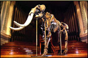

Механический Бизон
Текст Виталий Тищенко
Фото Александр Ноздрин

Дикий обитатель прерий, огромный бык с лохматой грудью был для североамериканских индейцев символом всесокрушающей мощи. Но с приходом цивилизации и Буффало Билла сошли на нет и краснокожие, и бизоны. Новые же хозяева континента поклонялись уже не животным, а механизмам. Олицетворяющим силу тотемом Америки стал армейский вездеход, победно бушевавший в пустынях Ирака и Кувейта.
Племенного быка выкупили у военных, запустили в цивильное автостадо — и появился Hummer H2.
Не нюхавший пороха «бэби-хаммер» своим рождением обязан недостаткам предка — Н1. На дембеле в начертанном на отцовских знаменах девизе «High Utility, Maximum Mobility» справедливой оказалась лишь вторая часть. Утилитарность гигантского дорогущего вездехода, с трудом вмещавшего четырех коммандос и одну скорострельную пушку на турели, мог счесть высокой лишь Пентагон, никогда не жалевший патронов и средств честных налогоплательщиков. Эту эксклюзивную, но по-спартански отделанную передвижную жилплощадь по цене и количеству квадратных сантиметров можно сравнить лишь с хрущевской холостяцкой микрометражкой, возведенной у стен Московского Кремля... И селекционеры General Motors, приобретя легендарную фамилию-«кувалду» и сговорившись с производителем AM General, вывели для фермы в Мишавака, штат Индиана, другую породу покорителей бездорожья и сердец. Сердец менее экстремальных индивидуалистов и соискателей автосвидетельства того, что жизнь окончательно удалась.
|
|
|
Получилась вещь, концептуально равная... VW New Beetle, поскольку под знакомой шкурой грозы пустынь укрылись агрегаты серийных «джиэмовских» внедорожников. Хотя не признать в молодом Бычке папиной породы невозможно — кузовная коробка с отсутствующими свесами и плоскими стеклами, высоко задранный клин морды с зубастой решеткой (не зря отсудили у Jeep ее семь дырок), нарочито грубый стык капота и корпуса, большущие 17-дюймовые колеса с высокими покрышками. В облик Хозяина Прерий дизайнеры плеснули даже романтики дальнего боя: в сумерках, когда на крыше и по периметру кузова загораются стаи оранжевых огоньков, H2 напоминает воспетый Голливудом «носатый» американский тягач.
«Бэби-хаммер», хоть и уступает гиганту-папе в размерах, вовсе не мал: его ширина на 6 см больше двух метров! Но пропорции иные. Благодаря тому что у H1 трансмиссия располагается в салоне, он поджар, а клиренс составляет умопомрачительные 406 мм. Агрегаты же H2 заняли привычное место под полом, и профиль стал массивным, а морда — «многоэтажной»: под щучьей (как прежде) пастью и бампером появились пластины декора и защиты. Этот упитанный бык уже не дик: на предохраняющем картер двигателя щите из толстого алюминиевого листа отштамповано тавро «H2». А от земли щит отделяет лишь 229 мм дорожного просвета. Но «лишний вес» лишь добавил облику Hummer брутальности. «Никакого нет резона / У себя держать бизона, / Так как это жвачное / Грубое и мрачное», — считал поэт. Резоны оставим владельцам, но рядом с H2 понимаешь: этот грубый мрачно-черный зверюга и впрямь способен сжевать любого пикадора из числа соседей по трафику — никакая двойная осевая не спасет.
В салон карабкаешься, цепляясь за специальные ручки, благо ими усеяны все стойки кузова. Но игра стоит свеч: внутри вы наконец-то чувствуете себя танкистом. Даже без шлема и галифе. Даже если мама у вас — пианист, а папа — педагог. Правда, сквозь вертикальную щель лобового стекла не виден орудийный ствол, широкие плоские «скамейки» обтянуты светлой кожей, а перед водителем вместо рычагов маячит руль, усеянный кнопками управления «ДВ/УКВ радиостанцией» с шестизарядным CD-чейнджером. Впрочем, на необъятной центральной консоли рычаг характерного вида имеется, но управляет он не бортовыми фрикционами, а четырехступенчатым «автоматом». А сходные рычажки поменьше служат для открывания дверей изнутри.
|
|